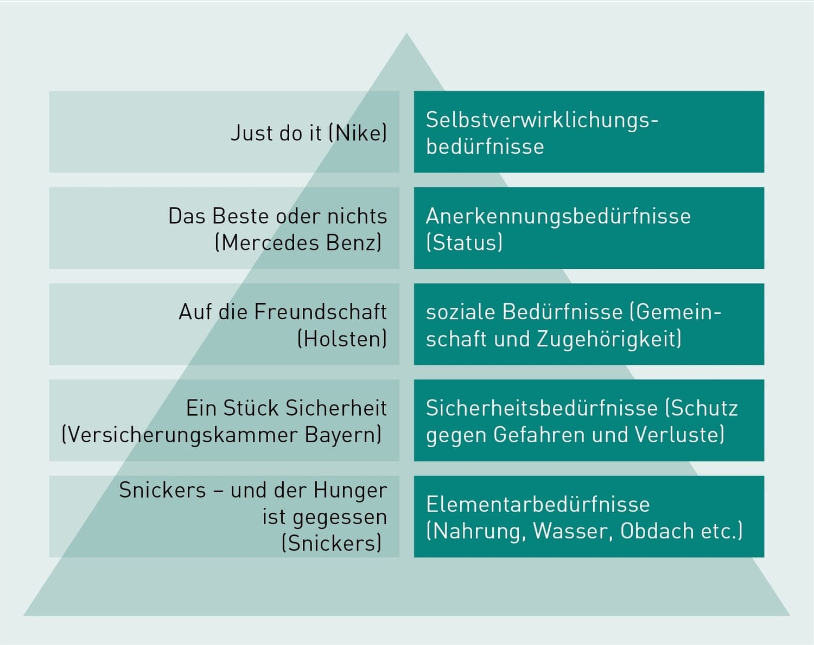

Aktivierung
Aktivierung bezieht sich auf die Erregung des zentralen Nervensystems, um den Organismus mit Energie zu versorgen und in einen Zustand der Leistungsbereitschaft zu versetzen. Diese psychologische Antriebsenergie kann man umgangssprachlich mit „Wachheit“ oder „Aufmerksamkeit“ übersetzen. Aktivierung ist somit die Grundvoraussetzung für jegliche Auseinandersetzung des Konsumenten mit der Marketingbotschaft. Nur wenn es gelingt, zur informationsüberlasteten Zielgruppe durchzudringen, kann eine weitere Beschäftigung mit der Botschaft erfolgen.
Aktivierung wird von Reizen ausgelöst. Innere Reize (z. B. Ermüdung) sind eher für die tonische Aktivierung relevant, während äußere Reize (z. B. Marketingbotschaft) vor allem die phasische Aktivierung auslösen. Für die Marketingpraxis sind folgende Reize besonders interessant:
- Emotionale Aktivierungsreize: Humor, Erotik, biologische Schlüsselreize;
- Kognitive Aktivierungsreize: optisch oder inhaltlich irritierende Inhalte oder Bilder, Widersprüche, Überraschungen;
- Physische Aktivierungsreize: optische und akustische Reize, Gerüche, Temperatur etc.
Je stärker ein Kunde durch die Marketingbotschaft aktiviert wird, desto besser kann er oder sie sich in der Regel daran erinnern. Der Grad der Aktivierungswirkung kann jedoch als positiv oder negativ empfunden werden und ist per se kein verlässlicher Indikator für den wirtschaftlichen Erfolg der Botschaft.
Emotion
Emotionen sind innere Erregungszustände, die als positiv oder negativ empfunden werden. Von Gefühlen spricht man, wenn diese Emotionen bewusst erlebt und verbal ausgedrückt werden können. Emotionen sind angeboren und können durch Reize ausgelöst werden.
Emotionale Kommunikation wird in der Regel schneller aufgenommen und besser akzeptiert als rein informative Botschaften, was die gestiegene Bedeutung von Emotionen für das Marketing erklärt. Viele Unternehmen verwenden emotionale Botschaften als Slogans (z. B. „BMW – Freude am Fahren“). Die folgenden Erkenntnisse zu Emotionen sind für Marketer besonders interessant:
- Emotionale Reize werden besser erinnert als neutrale.
- Angenehme Inhalte werden besser erinnert als unangenehme oder neutrale.
- Gut gelaunte Personen bevorzugen und erinnern emotional positive Reize, während schlecht gelaunte Personen eher negative Reize bevorzugen und erinnern (Stimmungskongruenz).
Motivation
Unter Motivation versteht man eine innere Antriebskraft, die das Verhalten auf bestimmte Ziele ausrichtet. Diese Ziele werden auch als Motive bezeichnet. Motive sind relativ stabil und in einer Person verankert und Ausdruck von Bedürfnissen.
Die bekannteste Bedürfnistheorie ist die Bedürfnispyramide in Anlehnung an Abraham Maslow. Sie ordnet die Bedürfnisse hierarchisch nach dem Druck, den sie auf einen Menschen ausüben. Unerfüllte Bedürfnisse sind am dringendsten, und erst wenn die Bedürfnisse einer Ebene erfüllt sind, werden übergeordnete Motive aktiviert. Obwohl die Pyramide in der Literatur umstritten ist, bleibt sie ein hilfreiches Raster für die Gestaltung von Kommunikationsmaßnahmen.
Einstellung
Einstellungen beschreiben relativ konstante Denkhaltungen gegenüber Sachen, Personen oder Ideen. Sie bestehen aus drei Komponenten:
- Affektive Komponente: die gefühlsmäßige Bewertung;
- Kognitive Komponente: das Wissen über den Bewertungsgegenstand;
- Konative Komponente: die Bereitschaft, auf bestimmte Weise zu handeln.
Die Komponenten beeinflussen sich gegenseitig und sind gewöhnlich auf Konsistenz ausgerichtet. Aus Marketingsicht bedeutet dies, dass Kunden durch positive Wissensvermittlung und Emotionen zum Kauf bewegt werden können. Einstellungen werden jedoch oft erst nach dem Kauf gebildet, insbesondere bei Produkten des täglichen Gebrauchs.